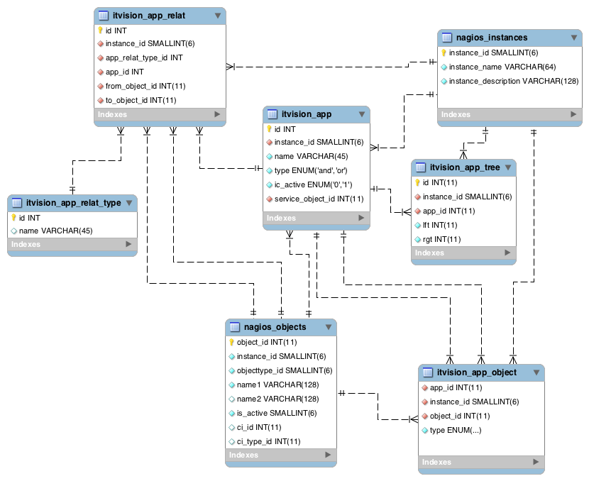
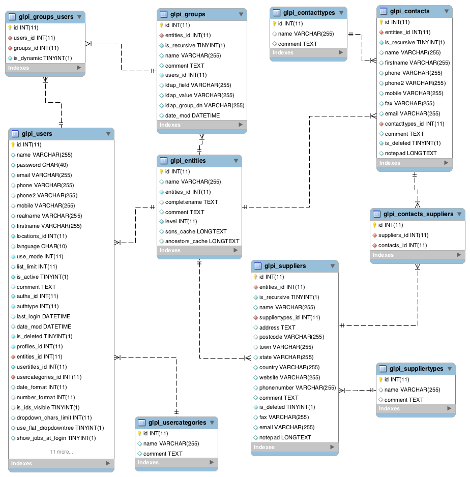
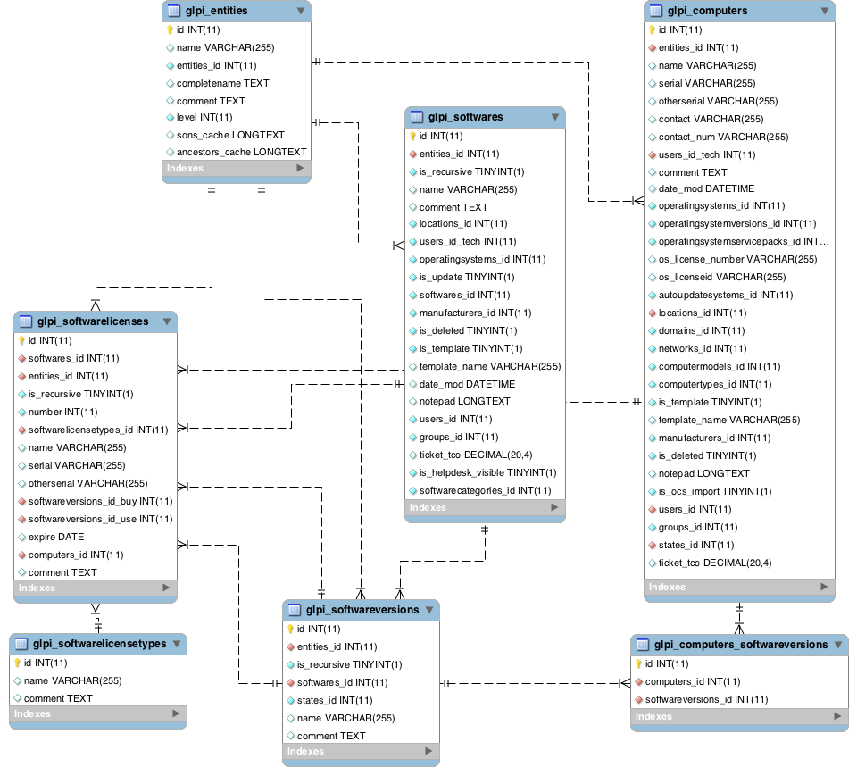
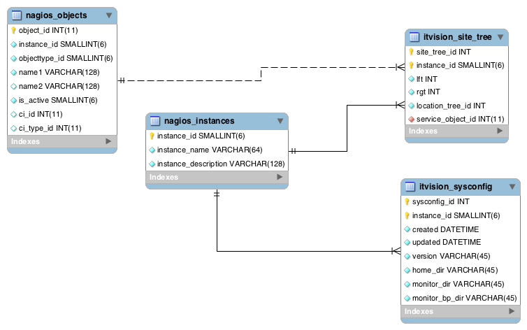
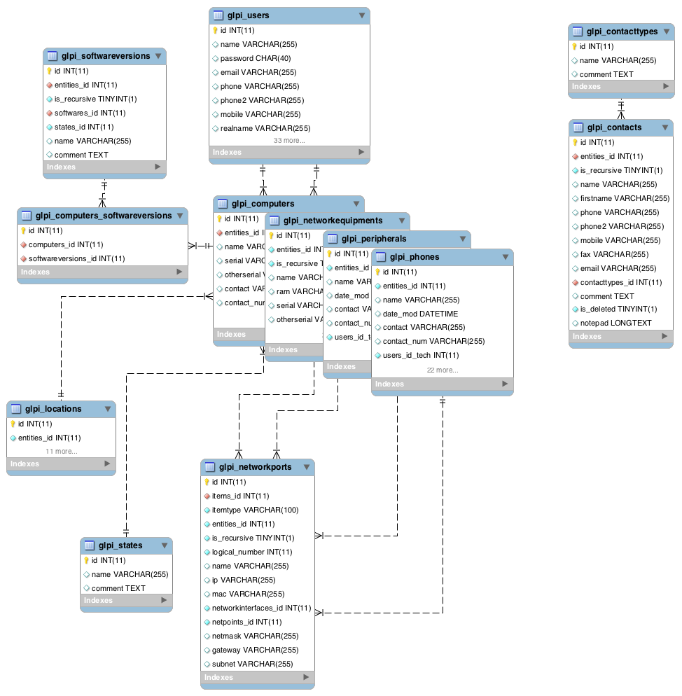

O Projeto ITvision
Descrição do sistema:
O ITvision é um sistema para monitoração de aplicações críticas. Deve ser formado pela integração de sistemas FOSS (Free and Open Source Software) disponíveis no mercado sob licenças tipo GNU e deve criar camadas de visualização da infra-estrutura computacional de um sítio.
Modelo Físico de Dados:

Aplicações

Usuários, Contatos e Fornecedores

Software

Sites
e Configuração do Sistema

Itens
de Configuração incluindo Computadores, Equipamentos de Rede,
Periféricos e Telefones
Diagramas de Seqüência:
Cenários de uso: (Descrição de uma forma potencial de seu sistema é usado, parte de um caso de uso, curso alternativo ou lógica contida em vários casos de uso.)
A
lógica dos métodos: (Para
explorar a lógica de uma operação complexa, função ou
procedimento.)
A
lógica dos serviços: (Um
serviço é um método que pode ser invocado por uma grande variedade
de clientes, incluindo web-services.)